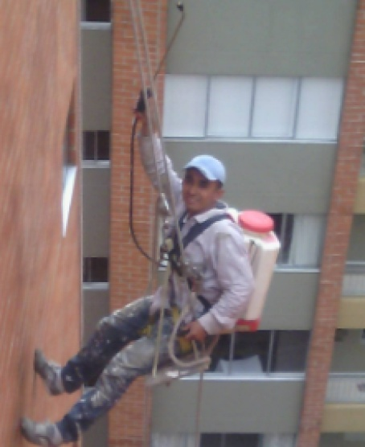
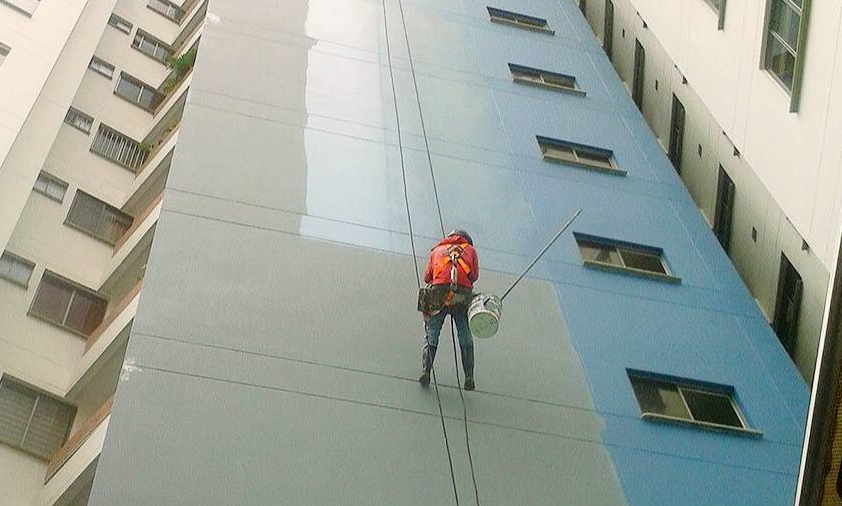

NUESTROS SERVICIOS
Soluciones integrales para la protección y estética de tu fachada
Lavado e Hidrofugado:
Eliminación de suciedad, moho y contaminantes mediante agua a presión, seguido de la aplicación de impermeabilizante.

Mantenimiento y pintura:
Restauración de superficies y aplicación de recubrimientos de alta resistencia climática para devolverle la vida a la edificación.

Todos nuestros servicios incluyen seguimiento digital y cumplimiento del SG-SST. Reportes fotográficos del antes y después para tu tranquilidad.